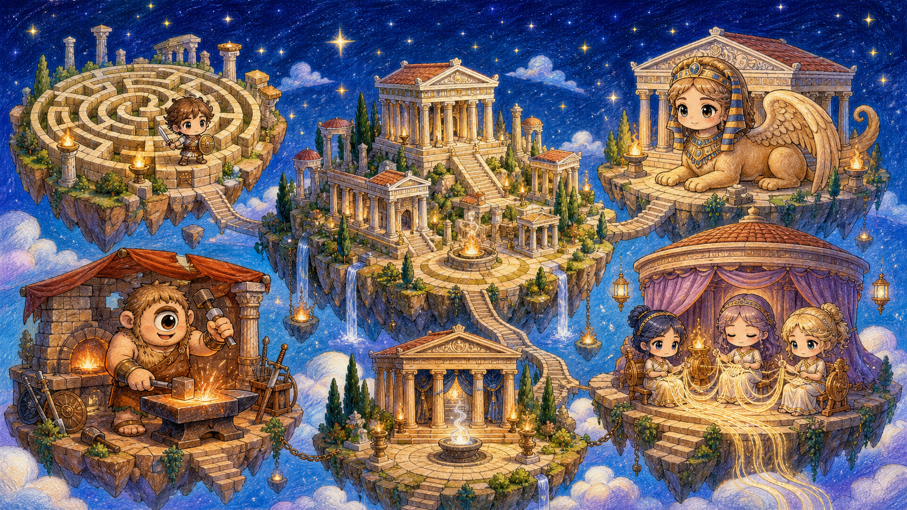

神話星圖
奧林帕斯的五座神殿等你用數學喚醒展開故事收合故事

奧林帕斯數術神殿
傳說奧林帕斯的智慧之火曾照亮每一條數術之路，直到混沌之霧封住五片領地。迷宮地底城的米諾陶洛斯守護數與量，斯芬克斯神殿以謎題考驗代數；獨眼巨人鍛造坊把空間與形狀鑄成精準器物，命運三女神紡織殿將關係與規律編入命線，德爾菲神諭殿則由皮媞亞與巨蟒辨讀資料與可能性。雅典娜派出五位智慧引路人，陪伴學徒閱讀神諭卷軸、破解題目，逐步喚醒沉睡的神殿。每一次計算、每一次驗證，都會留下神話印記；當五座神殿重新發光，學徒也將明白，真正的神力不是猜中答案，而是能說清楚自己的思考，並願意從錯誤中再走一步。在「步學吾數」，你不必一口氣征服整座奧林帕斯；只要今天比昨天多點亮一小段路，智慧女神的火炬就會始終在前方等你。